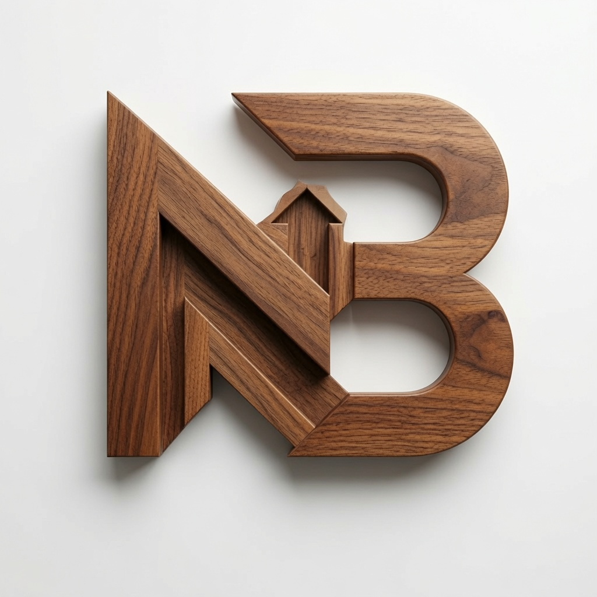

নেলসন্ বাড়ৈ
Director of Bangladesh Branch, AMT Engineering · MSc (2026)

I'm Director of the Bangladesh Branch at AMT Engineering JSC — the Rooppur Nuclear Power Plant project. Budgets, contracts, logistics, and keeping Russian and Bangladeshi teams aligned.
In September 2026 I'm starting an MSc in Business Analytics at ATU Galway. I can read a report and act on it; I want to learn how to build and test the model behind the report.
More background → · CV · Email
AMT Engineering JSC — Rooppur Nuclear Power Plant Project
Strategic planning, resource allocation, performance evaluation, budget oversight, cross-departmental coordination across Russian-Bangladeshi teams.
AMT Engineering JSC — Rooppur Nuclear Power Plant Project
Operations management, procurement, logistics, financial reporting, payroll, safety compliance.
FREYSSINET — Rooppur Nuclear Power Plant
Sourcing materials, managing administrative tasks, fostering collaboration among international teams.
Atlantic Technological University, Galway, Ireland
Statistical modelling, business intelligence, data analytics, decision science.
Kalmyk State University, Russia (Government Scholarship)
Thesis: "The Use of Computer Technology for Intensification of Business Processes in the Field of Forecasting"
Notre Dame College, Dhaka, Bangladesh